Executive summary
Palimpsest is a mature, disciplined, and genuinely working platform. Across ten independent expert reviews — each grounded in reading the code and probing the live server — every dimension rated “good” health. The 947 backend and 98 frontend tests all pass, and the recent Collections tier (C1–C7) is fully wired end-to-end and demonstrably functional in-browser. Adversarial verification of all high-severity findings refuted none: the issues are real but bounded, concentrated in correctness-honesty of a few statistics/visualizations, event-loop/atomicity robustness for a single-user desktop app, and UX reachability gaps — not systemic architectural failure.
Findings by severity
Of the 8 high-severity findings, adversarial verification confirmed the reality of every one (4 confirmed outright, the rest scoped to “partial/medium”), and refuted zero. That is the signature of a credible audit against a solid codebase.
What stands out
- Fail-loud coordinate invariants (
OffsetMap) and a purpose-built crash-safe atomic writer. - Consistent, verified path-traversal defenses; hex-validated binary-artifact labels.
- A single shared masked-run path (
runner.py) that removes most HTTP-vs-CLI drift. - A principled metric-congruence contract gating cross-text embedding comparison.
- Reference-free pangenome + neighbor-joining phylo genuinely computing on real corpora.
estimated_recall = 1.0 is a tautology — oracle and candidate generator rank by the same cosine metric with depth ≥ top-N, so it can only ever be 1.0. The “honest recall readout” needs an independent oracle.Methodology
A divide-and-conquer fleet of expert agents each owned one slice of the system and produced findings grounded in file:line evidence or an observed API response. Every critical/high finding was then handed to an independent adversarial verifier instructed to refute it. All live probing hit an isolated server on :8092 serving the embedded Matthew-Mark standing collection; the shared human session on :8080 was never touched.
Ten dimensions
- Backend architecture & code quality
- API contract & endpoint integrity
- Frontend / UI code quality & architecture
- Comp-ling: chunking, embedding & similarity engine
- Comp-ling: masking, profiling, integrity & lexical stats
- Collections tier end-to-end correctness
- Documentation coherence & requirement traceability
- Regression, gaps & latent bug hunt
- Visualization correctness & data-viz integrity
- UX & end-to-end workflow completeness
Evidence base
- 18 agents · 1.52M tokens · 526 tool calls · ~11 min wall-clock.
- 13 live UI screenshots (Playwright, real data).
- 6 plots rendered from real pipeline artifacts (matrix.bin, projections, sweep journals).
- Backend 947 tests + frontend 98 tests re-run green this session.
- Static reach: ~60 backend modules, 82 frontend source files, 77 endpoints, 42.7k doc lines.
Architecture
Palimpsest layers a genomics analogy over textual analysis: texts are ingested into a Project (with a reversible analyzable/original coordinate map), tracks compute annotation/signal/layer artifacts, an analysis leaf derives statistics, and a collections tier lifts single-text operators to reference-free cross-text corpora. A FastAPI server (77 endpoints) and a React browser (7 tabs) sit on top.
Development progress & roadmap
Three build epochs have shipped and are committed on origin/main: the Phase-1 narrative track set, the Wave-0 analysis suite (P1–P9), and the Collections tier (C1–C7), most recently with the standing collection embedded into a shared cosine space. The forward path is correctness/honesty hardening and the deferred scale features.
Phase-1 narrative tracks
ingest · tracks · reading/browser · characters"]:::done W0["Wave-0
Analysis suite P1-P9
layer-tracks · self-similarity · masking · profile · embedding-viz"]:::done CT["Collections tier C1-C7
object model · alignment · pangenome · phylo · masking · probe · sweep · workbench"]:::done EMB["Standing collection embedded
cross-translation probe · cosine congruence"]:::done NEXT["Next: correctness & honesty fixes
recall measurement · color mapping · phyletic tree · p-values"]:::todo SCALE["Deferred scale
HNSW/IVF ANN index · persistent job DB · cross-text masking editor"]:::future M1 --> W0 --> CT --> EMB --> NEXT --> SCALE classDef done fill:#d6efe0,stroke:#2e8b57,color:#14432b; classDef todo fill:#fdecc8,stroke:#d98c00,color:#5a3d00; classDef future fill:#eee,stroke:#999,color:#333;
Shipped & green
- Phase-1 / M1: ingestion, ~17 tracks, reading + browser + characters views.
- Wave-0 P1–P9: layer-tracks, self-similarity (3 metrics), masking, profile/textstats, integrity, embedding-viz, chunk-stats.
- Collections C1–C7: object model, pairwise alignment + PAF, pangenome graph, phyletic tree, cross-text masking + liftover, corpus analyses, probe, recall-dial sweep, 7-tab workbench.
- Embedded standing collection: reproducible
build.py embed, congruent cosine, cross-translation probe 0.9416.
Test & build health
- Backend: 947 tests, 0 failures/errors/skips (pytest -m "not external").
- Frontend: 98 vitest tests pass;
tsc -b && vite buildclean. - 7 Playwright e2e specs (self-similarity, plural layers, layer stats, C2 dotplot, C4 overview, C5 masking, C7 workbench).
- Type discipline:
mypy strict = true.
Live feature validation
Captured in-browser against the running application on real data — confirmation that the implemented features render and function, from the reading view through the full cross-text corpus workbench. Click any image to enlarge.
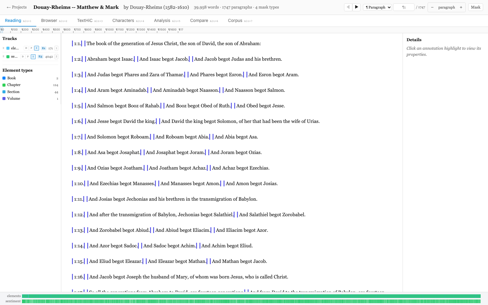
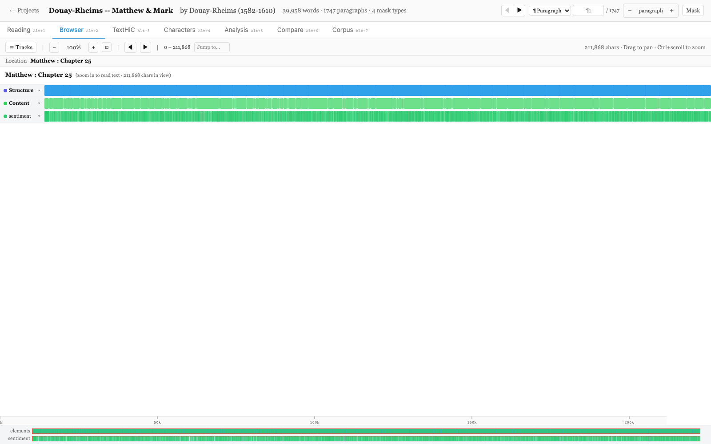
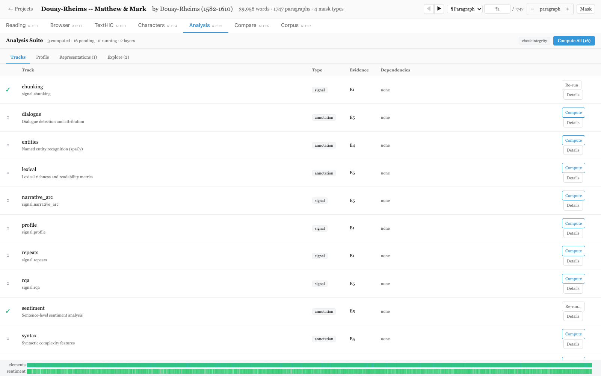
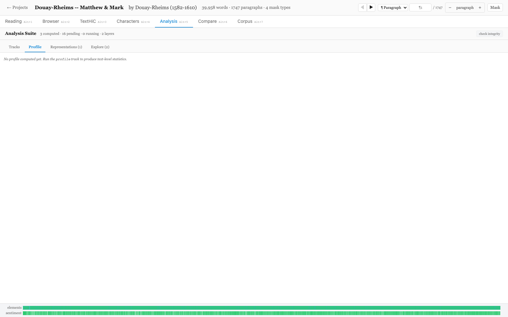
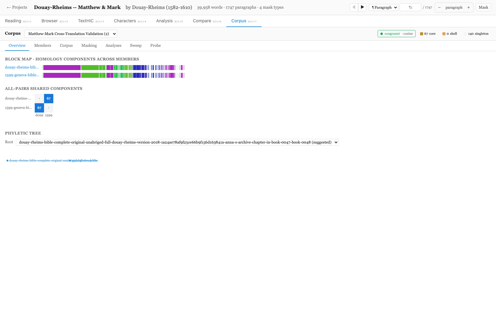
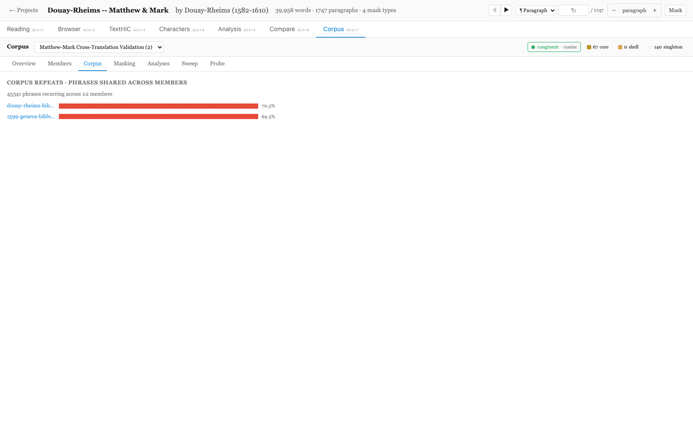
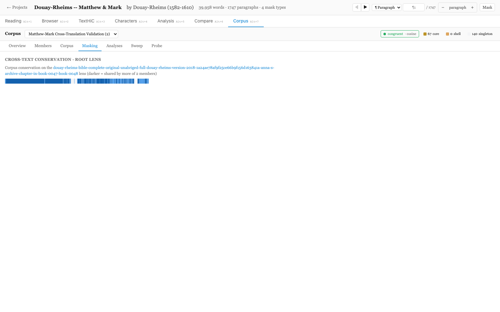
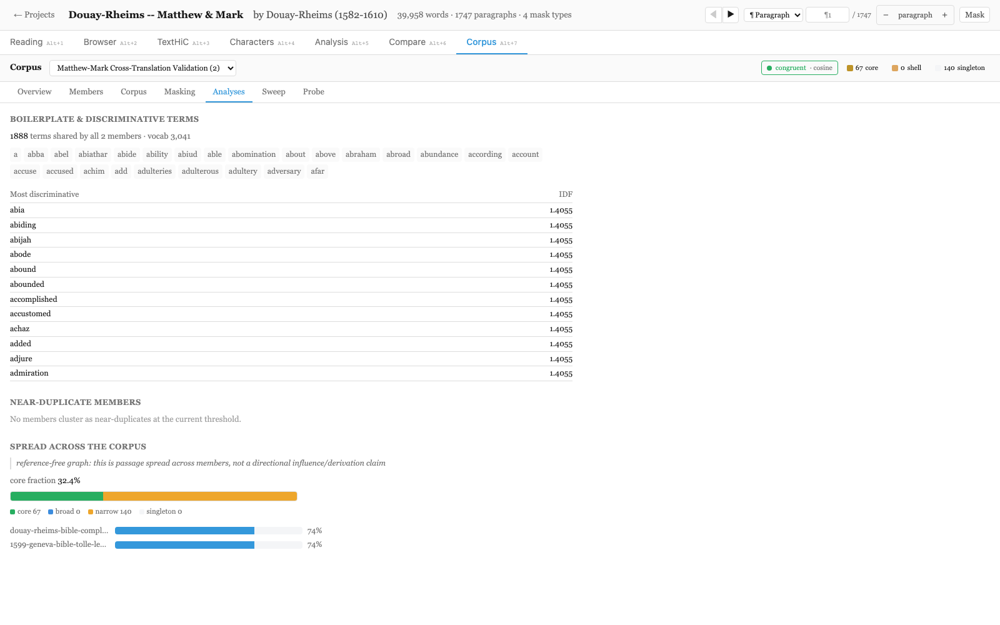
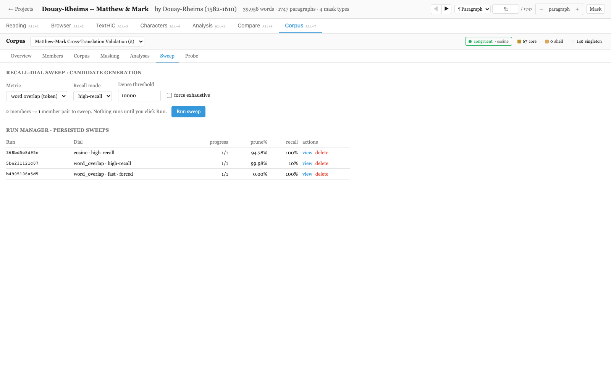
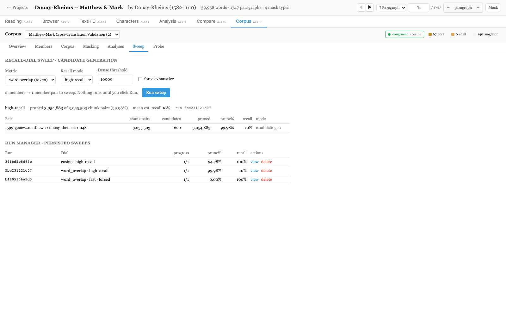
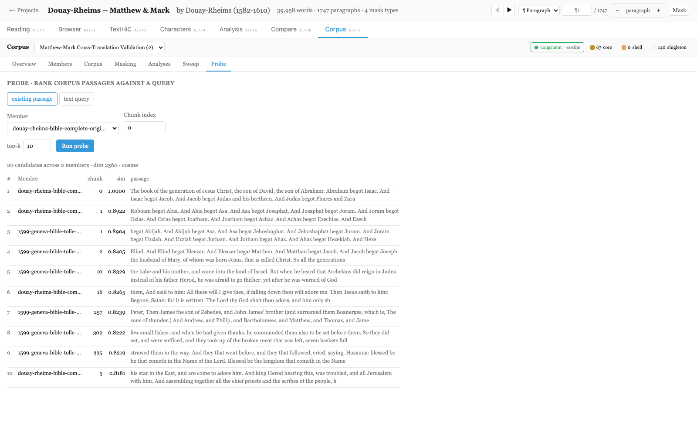
Real data through the pipeline
Every plot below is rendered from live artifacts produced by Palimpsest on the Matthew-Mark cross-translation corpus — not mock-ups. Together they show the platform's analytic signal end to end.
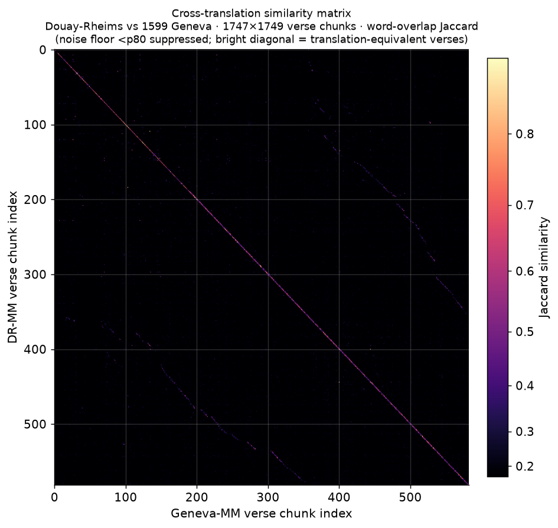
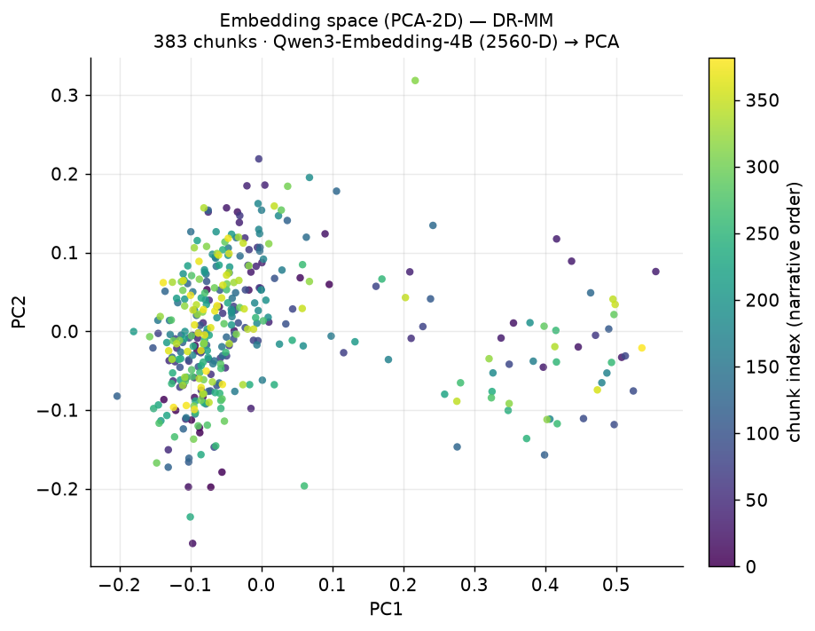
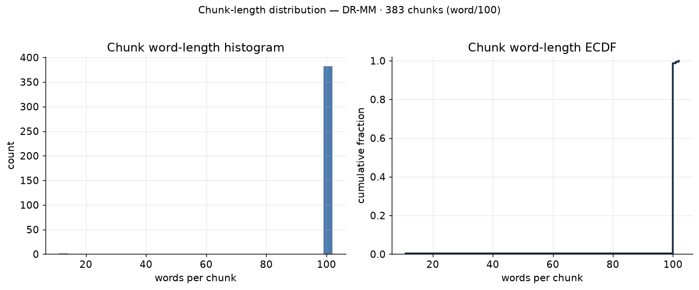
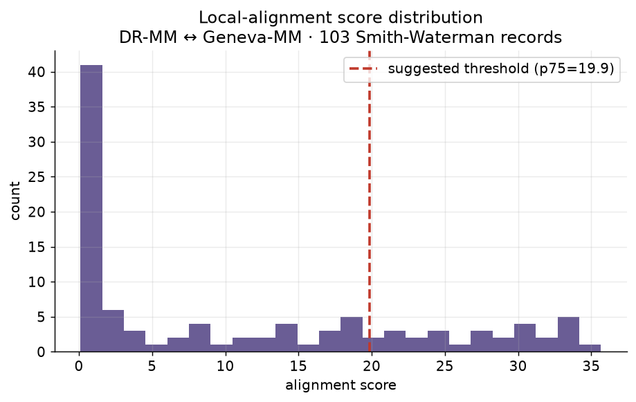
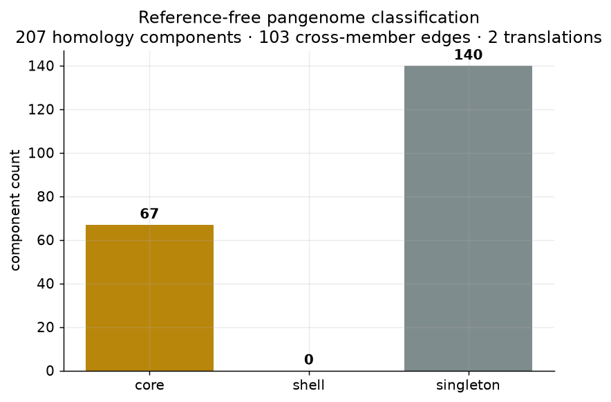
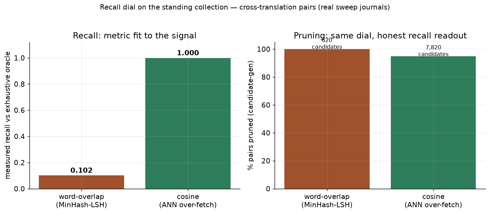
Key findings (high-severity & verified)
The highest-signal issues, each grounded and (where high) adversarially verified. Full detail per dimension below.
All findings by dimension
Click a dimension to expand its health summary, strengths, and full findings list. Filter by severity:
The Palimpsest backend is a mature, disciplined codebase with strong architectural bones: a structurally-typed track protocol with dependency-ordered execution, a deliberate atomic-write module, well-documented coordinate-remapping invariants that fail loud, and a genuine shared run path (runner.py) that dedups HTTP and CLI single-track execution. Path/injection validation is thorough and holds up under live probing (traversal returns 403/404, no leak). The main weaknesses are localized rather than systemic: several persisted-and-concurrently-read artifacts bypass the atomic-write module the codebase built for exactly this hazard, several CPU-heavy collections endpoints block the async event loop, and the CLI bulk analyze command re-implements persistence in a way that diverges from the shared writer for layer-keyed tracks. Because the server binds localhost-only for a single-user desktop app, the concurrency/durability gaps are real but bounded in blast radius.
Strengths
- atomic.py is genuinely crash-safe for the file body: temp file in the same dir + f.flush() + os.fsync() + os.replace(), with temp-file cleanup on BaseException (core/palimpsest/atomic.py:22-39). The module docstring correctly articulates the torn-file / concurrent-poller hazard it defends against.
- Path-traversal defense is consistent and verified live: _safe_project_dir/_safe_import_path/_safe_gold_map_path all reject '..'/absolute/backslash AND re-check is_relative_to() after resolve() (server.py:631-694); _validate_ids uses a strict ^[a-zA-Z0-9_\-]+$ allowlist (server.py:2706-2710); embedding/chunk labels are hex-validated (server.py:289,338). Live probes on :8092 returned 404/403 for encoded and raw traversal on project_id, embedding label, and /data/{path:path}.
- The module-scope-BaseModel FastAPI gotcha (silent 422 on function-scoped bodies) is honored: all 17 request/response models are defined at module scope (server.py:28-170), before create_app at line 835.
- Coordinate correctness is engineered to fail loud, not drift silently: OffsetMap enforces its ordered/disjoint/non-empty span precondition in __init__ (derive.py:33-60); analyzable_text asserts len(text)==omap.child_len before returning (project.py:351-355); remap_signal_data raises UnmappedCoordinateError on an offset-bearing shape it can't handle (derive.py:297,333) rather than mislabeling analyzable coords as original.
- runner.py successfully removes a whole class of HTTP-vs-CLI drift: extract_masked + persist_track_outputs are the single shared masked-run + persistence path, imported by both the /analyze endpoint (server.py:1306-1311) and the CLI run-track command (cli.py:334-335), and it carries no web-framework dependency so the CLI need not import FastAPI.
- Type discipline is enforced at the project level (pyproject.toml: [tool.mypy] strict = true), and the server error-handling philosophy is deliberately fail-loud at boundaries — e.g. set_params/validate_params ValueErrors are mapped to clean 400s with the real message (server.py:1279-1293) and the async job records the actual exception type+message rather than a canned label (server.py:1313-1323).
Findings (7)
The 77 HTTP endpoints in server.py are well-disciplined: OpenAPI reports exactly 77 operations across 70 paths (matching the documented count), error codes are consistent and semantically correct (400 bad-request, 404 missing, 409 metric-congruence), path-traversal is blocked, and the SSE streaming and metric-congruence-gated endpoints are exemplary. Live probes of :8092 all passed: congruence returns all_congruent=true for both cosine and word_overlap, bad metric yields 400, missing collection yields 404, and matrix.bin byte-count matches the manifest dimensions exactly. The two real weaknesses are (1) a binary wire-contract that is inconsistently self-describing across the four .bin endpoints, and (2) substantial HTTP/CLI drift — the claim that cli.py mirrors all endpoints is false: the entire Wave-0 per-project analysis surface and alignment run/diff operations are HTTP-only.
Strengths
- Congruence contract is fully correct on the live server: GET /api/collections/matthew-mark-validation/congruence?metric=cosine returns all_congruent=true with needs_embedding=true and per-member congruence keys (embedding:cosine:c9757c16...); ?metric=word_overlap returns all_congruent=true needs_embedding=false; ?metric=BOGUS returns HTTP 400 with 'unknown similarity metric(s): BOGUS; valid metrics: cosine, jaccard, word_overlap, edit_distance'; missing collection returns HTTP 404 'Collection not found' (server.py:2378-2394).
- Metric-congruence gating is a genuine architectural strength: the probe endpoint (server.py:2472-2522) maps MetricCongruenceError->409, KeyError->404, ValueError/FileNotFoundError->400, and enforces mutual-exclusion validation (exactly one of 'q' or 'ref_project'+'ref_chunk', else 400). Sweep mirrors the same 409 gating (server.py:2542).
- Binary matrix contract is internally consistent where it counts: live matrix.bin returned exactly 12,222,012 bytes and the sibling /matrix JSON manifest reports dimensions [1747,1749], dtype float32, byte_order little-endian — 1747*1749*4 = 12,222,012, a byte-exact match, and _f32_le_bytes serializes as '<f4' C-order (server.py:314-317).
- SSE streaming endpoints are robust: /import/local/stream and /derive/stream (server.py:2025-2086, 2211-2278) run ingest/derive in a worker thread, marshal progress via loop.call_soon_threadsafe into an asyncio.Queue, emit terminal done/error events carrying the real HTTP status in the payload, and set Cache-Control:no-cache + X-Accel-Buffering:no for proxy-safe streaming.
- Error-code and traversal discipline verified live: missing alignment records -> 404 'No alignment results found', missing project analysis/status -> 404 'Project not found', encoded traversal (..%2F..%2Fetc) -> 404 (route-level rejection); _safe_project_dir and serve_project_file both reject '..','/','\\' and enforce is_relative_to(workspace) (server.py:631-640, 2961-2974).
Findings (7)
browser/src is a mature, disciplined React-19 + Vite + zustand + Tailwind codebase. The build is genuinely clean (tsc -b exits 0, verified), the documented track-map over-subscription perf bug has been fixed with deliberate per-track/useShallow selectors, and state, error-boundary, and tab a11y patterns are largely correct and consistent. The main weaknesses are architectural sprawl in a few 1000+ LOC component monoliths, a total absence of any central fetch/API client (71 inline fetches with inconsistent error/cancellation handling), and a handful of UX-primitive inconsistencies (one legacy inline-styled component, ad-hoc loading strings, a keyboard-inaccessible SVG click target). None are critical; all are addressable incrementally.
Strengths
- Zustand selector discipline is real and the documented over-subscription regression is fixed: trackStore.ts:99-118 exposes useTrackVisibility (subscribes to a single track's visible flag) and useTrackManifests (wrapped in useShallow so the manifest map stays shallow-equal across toggles), each with comments explaining exactly why. AppLayout's maskTypeCount selector (AppLayout.tsx:32-40) builds a Set internally but returns .size (a primitive), so it does not leak a new reference each render.
- Build health matches the docs: `npx tsc -b` returns exit 0 with zero errors (personally run), confirming the previously-flaky React-19 typecheck is now genuinely clean.
- Correct, consistent tab/ARIA semantics across the app: role=tablist/tab, aria-selected, and aria-controls={`panel-${id}`} in TabBar.tsx:19-25 correctly point at AppLayout.tsx:110-111 (role=tabpanel, matching id). ErrorBoundary wraps every tab panel plus DetailPanel and MaskingPanel individually (AppLayout.tsx:120-141), so one view crashing cannot white-screen the app.
- LLMSummary.tsx models async state as a discriminated union (idle | loading | done | unavailable | error, lines 8-13) rather than boolean flags, giving exhaustive, race-free rendering of every state including a distinct 'AI service unavailable' path (line 40) — a genuinely good pattern the rest of the codebase should copy.
- SVG data visualizations are annotated for a11y and tooltips: BlockMap, AllPairsMatrix, PhyleticTreeView, RepeatLanes, ConservationLane in CorpusView.tsx and the LayerLane/BandLane family all carry role=img + aria-label and per-rect <title> hover text, and the AllPairsMatrix cells are real <button>s (CorpusView.tsx:112-127), which is keyboard-accessible.
Findings (9)
The core similarity math is sound and, unusually for this class of tool, correct in the details I could verify empirically: cosine is L2-normalized with a safe zero-vector guard; word_overlap is a true content-token Jaccard; edit_distance normalizes token-level Levenshtein correctly to [0,1]; IDF/BM25 are textbook Lucene/Okapi; Smith-Waterman's Waterman-Eggert non-overlap correctly preserves genuine repeats (verified live: a query range aligning to two distinct target ranges yields 2 records). Metric-congruence is principled — token metrics key on metric-only ("tokens:word_overlap"), embedding metrics fold in a provider+endpoint+model+dim fingerprint while deliberately EXCLUDING the per-text analyzable digest, which is exactly right for cross-text comparability (confirmed live: both Matthew-Mark editions share embedding:cosine:c9757c16f8473ef1). The weak spots are statistical/peripheral: Gumbel p-values are only wired for the semantic method (word/alphabet alignments ship p=1.0), the null model permutes one axis only, and a few masking/labeling inconsistencies exist at the edges.
Strengths
- Waterman-Eggert non-overlap is correctly implemented and the 'repeats survive' claim holds under live test: smith_waterman.py:102-112 rejects a candidate only when it overlaps an accepted record on BOTH axes; I built a tandem-repeat matrix (query 0-2 aligning to targets 0-2 AND 5-7) and got exactly 2 records, confirming a one-axis-overlapping repeat is kept (smith_waterman.py:106-107 'disjoint on an axis -> distinct block -> keep').
- The 'no silent cap' claim is real: smith_waterman default max_alignments=None extracts exhaustively (smith_waterman.py:119-124), and if a positive cap is hit while cells remain above threshold it logs at WARNING (lines 187-192) rather than silently truncating — a genuine fix over the described legacy min(100, n*m) cap.
- Metric-congruence key design is linguistically principled (collections_ops.py:175-195): token metrics are text-independent ('tokens:{metric}') so any two chunked texts are congruent, while embedding metrics require an identical vector space via model_fingerprint = sha256(provider:endpoint:model:dim) — and crucially the per-text chunk_analyzable_digest is NOT folded in, so two DIFFERENT texts embedded by the same model correctly land in one comparability cohort. Live congruence GET confirms both editions share one key and all_congruent=true.
- The four similarity kernels are individually correct: _cosine_matrix (self_similarity.py:114-120) L2-normalizes with a 1e-8 zero guard and clips to [-1,1]; _word_overlap_matrix (131-155) is a true content-token Jaccard |A∩B|/|A∪B|; _edit_distance_matrix normalizes 1 - dist/max(la,lb) to [0,1] (verified: 2-vs-1 token overlap -> 0.5); corpus_idf/bm25_scores (corpus_analysis.py:28-87) are exact smoothed-IDF + Okapi BM25.
- Chunking offset discipline is rigorous: chunk_text runs a postcondition self-check (_validate_chunks, chunking.py:290-337) verifying every record is index-sequential, in-bounds (0<=start<end<=n), start-ordered, disjoint (or non-decreasing for slide), AND text-anchored (chunk['text']==text[start:end]) — a coordinate-corrupting chunk fails loud at the producer instead of poisoning the OffsetMap downstream.
Findings (7)
The lexical-diversity and statistics core is mathematically sound: I verified Yule's K, MTLD (against the reference lexical-diversity algorithm), MATTR, Zipf, Heaps, Dunning's G², and PMI against the literature and independent reimplementations, and all match. Verse-number masking is genuinely content-preserving and reversible (probed live: "1:1. " masked, prose intact), and KWIC/dispersion original-coordinate remaps verified byte-exact against the reference text. The real correctness defects are narrower: a masking/detection bug when repeated phrases contain punctuation-only tokens (double-space phrase keys break the span-mapping and coverage comparison), and an OffsetMap boundary-aliasing gap that the integrity round-trip validator never exercises. Overall a mature, well-documented codebase with a few surgical bugs.
Strengths
- MTLD is implemented correctly including the bidirectional mean and the partial-factor `(1 - TTR)/(1 - threshold)` remainder (textstats.py:66-88) — I reimplemented the canonical McCarthy & Jarvis / lexical-diversity algorithm independently and got identical output (7.8191 on a 2000-token sample). MTLD/MATTR are the two measures most commonly gotten subtly wrong, and both are right here.
- Yule's K matches the canonical `10^4 * (sum_i i^2*V_i - N) / N^2` formula exactly (textstats.py:91-99): verified 2222.2222 on a hand-computed toy case. Dunning's G² (textstats.py:186-199), though written as a factored two-binomial log-likelihood, is algebraically identical to the standard 2x2 contingency form — verified 65.2835 against an independent Rayson-style reimplementation.
- Masking is truly content-preserving and reversible for verse numbers: live probe of the DR project confirmed the mask span [0,5) covers exactly the token "1:1. " while the prose "The book of the generation of Jesus..." (offset 5+) stays analyzable (verses.py:43-69; reference.txt). The integrity report exposes the coordinate invariants as a first-class user surface (integrity.py) rather than burying them.
- Coordinate remap to original space is correct on the hot paths: KWIC start/end (server.py:1787) and dispersion spans (server.py:1844) both mapped byte-exact against reference.txt (offset 76376:76385 == 'beginning', 35:40 == 'Jesus'). ECDF ends at 1.0 and histogram counts sum to n (live chunking/stats probe: n=383, sum(counts)=383, y[-1]=1.0), so the distribution primitives are internally consistent.
- Detection and masking share a single `_count_repeats` tally (repeats.py:70-90) so the `repeats` and `repeat_mask` tracks provably cannot drift on the counting logic, and OffsetMap enforces its ordered/disjoint/non-empty span precondition at construction (derive.py:60-71) instead of silently mistranslating.
Findings (5)
The collections tier is a genuinely mature, mathematically careful implementation of a reference-free pangenome/phylo model. The pure leaves (phylo NJ Saitou-Nei, Jaccard dissimilarity, corpus IDF/BM25, union-find, single-linkage) are correct and I verified them empirically against hand-built cases and the live :8092 API. Core/shell/singleton classification is sound (shell=0 for the N=2 validation corpus is mathematically correct). The congruence gate and non-destructive run versioning are principled. The two substantive weaknesses are both in the recall dial (C6c): the ANN "empirical recall" is tautologically 1.0 by construction, and the whole dial is not wired into any downstream exact-alignment step, so its stated purpose (accelerating an intractable O(N×M) sweep) is unrealized end-to-end.
Strengths
- Phylo math is correct and verified: neighbor_joining (phylo.py:55-104) implements the Saitou-Nei Q-criterion with deterministic lowest-index tie-breaking, negative-branch clamping, and the correct new-distance update duc=0.5*(d(a,c)+d(b,c)-d(a,b)); I ran it on a hand-built 3-member core/shell/singleton case and got the expected topology (internal node 3 joining leaves 0,1, then 2). Jaccard dissimilarity D[i,j]=1-both/union (phylo.py:33-52) is the correct pangenome distance.
- The honesty discipline is real and not cosmetic: summarize_candidates (candidate_gen.py:192-226) returns estimated_recall=None (not a fabricated 1.0) when there is no oracle sample, and the live word_overlap sweep openly reports mean_estimated_recall=0.102 rather than hiding a poor result. n_pruned/prune_fraction are always reported so a cap is never silent (verified via GET /sweeps on :8092).
- The metric-congruence contract is correctly and consistently enforced as a fail-loud gate across probe, sweep, and comparison resolution (collections_probe.py:63-113 _gate_congruent_cohort; collections_ops.py:307-343 resolve_comparison), with the subtle and correct design choice to EXCLUDE the per-text analyzable digest from the congruence key (collections_ops.py:20-25) so cross-text comparison is not impossible by construction — while still folding the digest into operand_identity (collections_ops.py:348-362) to drive FR-28 staleness.
- Union-find (corpus_graph.py:101-118) is correct: two-pass path compression verified to fully flatten a 4-deep chain to the root, and anchor_of full-containment lookup is consistent because anchors are built from the same (possibly trimmed) intervals that seed the edges (corpus_graph.py:247-281).
- anchor_trim (C6a anchor honesty, corpus_graph.py:150-168) is a thoughtful correctness safeguard: it trims trailing/leading low-similarity boundary cells before a Smith-Waterman block becomes an anchor, preventing a weakly-overlapping paragraph from absorbing a disjoint passage into a core/shell homology component, and drops a wholly-low-similarity block instead of anchoring it.
Findings (7)
Requirement traceability is strong: all 43 FRs (Wave-0 FR-1..22 across plan phases P1-P9; Collections FR-23..43 across C1-C7) are implemented in code and confirmed live on :8092 — the running server exposes 70 endpoints including the full embedding-viz suite, self_similarity `/inputs` picker, corpus-graph/phyletic/probe/sweep, and CLI/HTTP parity throughout. The collections-tier-build-journal is an exceptionally honest, file:line-grounded record that flags its own deviations (FLAG i-iv). The main coherence defects are: (a) the wave0 plan's done-criteria checkboxes are stale — only P8 is marked complete though P1-P9 all shipped; (b) FR-27's congruence-key definition in the vision doc still lists the analyzable digest that the implementation deliberately dropped; and (c) several Phase-1 literary tracks (narrative_arc, rqa, boundary_detection) are runnable from the Analysis UI but have no rendering path, so a user computes them and sees nothing.
Strengths
- The collections-tier-build-journal.md is grounded to a fault: every phase cites file:line, records exact test counts that match reality (947 backend / 98 frontend — verified against the stated baseline), documents autonomous deviations transparently (FLAG i-iv, e.g. liftover is a purpose-built AlignmentMap not an OffsetMap at journal:276-284), and captures empirical before/after tables (C6a smith_waterman fix, journal:378-386). This is model requirement-traceability documentation.
- CLI/HTTP parity (FR-37) is genuinely complete, not aspirational: `palimpsest collections --help` exposes 21 subcommands (create/add-member/role/lattice/congruence/corpus-graph-*/phyletic-tree/probe/sweep/liftover/…) mirroring every collection HTTP endpoint, and the live /congruence endpoint returns exactly the keys the code computes.
- Superseded-design hygiene is excellent: docs/development/research/domain-synthesis/12-development-roadmap.md is v2.0 with a bold SUPERSEDED banner naming its successor (v4.0, doc 28) and explicitly warning that its tech decisions (MobX-state-tree, D3) are obsolete — the opposite of stale-doc drift.
- WALKTHROUGH.md is current with the post-P7 architecture: it documents the self_similarity layer-consumer flow (Configure -> bind chunk/repeat_mask/embedding bundles, WALKTHROUGH:197-203) and that chunking/embedding/repeats/repeat_mask/self_similarity are NOT run by batch analyze (WALKTHROUGH:82) — matching the shipped code exactly.
- The FR-27 congruence deviation, while undocumented in the vision, is defended in-code at collections_ops.py:22-24 with the exact rationale (two distinct texts always have distinct digests, so folding the digest into a cross-text key makes comparison impossible by construction) — a reasoned engineering call, not an accident.
Findings (6)
Palimpsest is a mature, unusually disciplined codebase: zero TODO/FIXME/bare-except markers, no silent-cap anti-patterns (the team explicitly documents "never a silent cap" and exposes total-vs-returned counts), 947 backend + 98 frontend tests green, and all integrity invariants pass on the live collection. The adversarial hunt surfaced one reproducible latent bug (RQA UnboundLocalError on <2-paragraph projects), one weaker-than-canonical path-traversal guard on /api/explain, and a real feature-completeness gap: several fully-built P4 and C5 endpoints (KWIC, collocations, dispersion, cross-text-mask, low-correspondence, mask-effect, corpus-graph/projection) have zero UI consumers. Nothing critical; the issues are surgical and localized.
Strengths
- Systematic anti-silent-cap discipline: alignment/smith_waterman.py:92-97 removed a former min(100,n*m) cap that hid near-duplicate alignments, replaced with proper cell-disjoint non-overlap extraction; max_alignments truncation is WARN-logged as 'not a silent cap' (smith_waterman.py:189-191); KWIC exposes total vs returned so limit=200 truncation is visible (server.py:1777, verified live: total 253 / returned 200); kmeans k=min(k,n) clamp is documented in the docstring (analytics.py:110).
- Honest error surfacing: the analyze job handler (server.py:1313-1323) carries the real exception type+message end-to-end instead of the previous code that relabelled every error as a bogus 'Matrix too large', and out-of-range params (n_states/n_topics) return a clean 400 rather than being silently clamped (server.py:1222-1224, 1276-1293).
- Robust integrity layer: live GET /api/projects/{id}/integrity returns all_green=true across masked-partition, span-region-bounds, segment-contract, section-tree, offsetmap-roundtrip, and analyzable-bridge invariants — a real self-validation harness, not decorative.
- Deterministic, reference-free collections tier that actually works end-to-end on the live Matthew/Mark cross-translation collection: corpus-graph, phyletic-tree (NJ distances), cross-text-mask liftover, and low-correspondence all return well-formed real data via GET on :8092.
- Canonical path-traversal guard _safe_project_dir (server.py:631-640) is genuinely strict (blocks .. / \\ AND verifies is_relative_to(workspace) after resolve) and is used consistently across almost all endpoints.
Findings (6)
Palimpsest's visualizations are, for the most part, faithful renderers of real backend data with strong coordinate discipline: canvas heatmaps read little-endian Float32 buffers in documented C order, char/paragraph/chunk axes are consciously distinguished, min-width rect guards prevent sub-pixel bands from vanishing, and the PCA/k-means backend is explicitly deterministic with sign-canonicalization and no-silent-cap sampling. The most material integrity gap is color-scale honesty for cosine: the two primary heatmaps (DotplotView TextHiC, ComparativeDotplot) feed raw cosine [-1,1] into a [0,1]-clamping color ramp and label the legend "0...1 similarity," while the very same repo maps cosine correctly as (x+1)/2 in LayerStatsPanel — an internal inconsistency, not ignorance. A second real defect: the phyletic-tree layout collapses to a single overlapping row for the standing 2-member validation collection because it assumes internal nodes are never leaves. Everything else audited (BlockMap, OverviewBar barcode, conservation/repeat lanes, alignment overlays, distance histograms) renders real data honestly.
Strengths
- Backend viz compute is genuinely deterministic and honest about degradation: analytics.py canonicalizes PCA component signs (_canonicalize_signs, analytics.py:52-60) so scatter plots are reproducible across BLAS/platforms; k-means is seeded with tie-breaking to lowest index; and sampling/block-reduction report the realized count via X-Matrix-Reduced / sampled_pairs headers rather than silently truncating (analytics.py:14-15, server.py:1686-1691).
- Index-alignment contract is explicit and preserved end-to-end: analytics.py's module docstring (lines 6-9) documents that row i == chunk i and only order=cluster permutes (returning the permutation via X-Matrix-Order so cells map back to chunks), preventing silent document mislabeling.
- Coordinate axes are consciously distinguished, not conflated: DotplotView labels axes as chunk indices with an explicit comment 'Axis labels — chunk indices, not paragraph indices' (DotplotView.tsx:401) and aria-label states '{n}x{n} chunks ({chunkSize} words each)'; ComparativeDotplot correctly labels paragraph axes '¶N' matching the backend's paragraph-embedding matrix (cross_similarity.py:21-24).
- The correct cosine [-1,1]->[0,1] transform DOES exist in the codebase (LayerStatsPanel.tsx:174 'row.push((flat[i*dim+j] + 1) / 2)'), proving the team knows the honest mapping — the primary heatmaps simply don't reuse it.
- SVG rect math consistently guards against invisible bands via Math.max(1, ...) width floors (OverviewBar.tsx:37,58; CorpusView.tsx:81,225,256; LayerLane.tsx:73), and distance histograms clip float-error excursions back into [0,2] with an explicit comment that np.histogram would otherwise silently undercount (analytics.py:212-216).
Findings (7)
Palimpsest's single-text journey (import → sections → tracks → reading/browser/analysis/dotplot) and the collections workbench (Compare, Corpus with Overview/Members/Corpus/Masking/Analyses/Sweep/Probe) are genuinely mature and mostly complete, with strong empty/loading/error states and an unusually disciplined cost-confirmation culture in the collections tier (Probe, Sweep, Reconcile all gate expensive work behind a CostDialog and never auto-run). The main friction is at the seams: the cross-text mental model (Project vs Collection) is under-signposted — the Corpus tab is absent from the Home launchpad and can only be reached after opening a single text, and the corpus-graph auto-builds without the cost discipline applied elsewhere. A few analysis dead-ends tell the scholar to "run analysis first" with no in-place CTA, and the embedding cost estimate the backend already computes is never surfaced in the UI. These are polish gaps on top of a real, working product, not structural holes.
Strengths
- Cost/confirm discipline in the collections tier is exemplary and consistent: ProbePanel runs a free ref-lookup directly but gates the expensive text-embedding probe behind CostDialog with explicit 'runs only when you confirm' copy (ProbePanel.tsx:71-76, 201-212); SweepPanel shows the exact pre-run member-pair count and states 'Nothing runs until you click Run' (SweepPanel.tsx:209-219); CorpusView's reconcile flow explains the per-member re-embed cost before acting (CorpusView.tsx:480-506).
- Honesty about analytical limits is surfaced in the UI rather than hidden: AnalysesPanel renders the diffusion metric's non_directional_note verbatim so the tool never implies an 'A influenced B' causal claim (AnalysesPanel.tsx:141-143); SweepPanel/ProbePanel show empirical recall as 'n/a' when the oracle was unsampled instead of a fake number (sweep.ts:5-7); AnalysisPanel exposes clamped/effective/requested params and silent HMM->KMeans fallbacks (AnalysisPanel.tsx:59-68).
- Empty, loading, and error states are handled across nearly every view: CompareView distinguishes no-project / no-secondary / ready-to-align / computing states with tailored copy and a shimmer bar (CompareView.tsx:220-257); Synteny/Circos/Diff each have their own empty state; CorpusView shows a graph gate only for graph-dependent sub-tabs (CorpusView.tsx:47-48, 438-440).
- The metric-congruence contract has a first-class UI affordance: CongruenceBadge asks the backend whether members are comparable on the chosen metric and offers a reconcile action rather than silently comparing across incompatible embedding spaces (CongruenceBadge.tsx:1-47; live /congruence returns needs_embedding:true for the validation collection).
- The subtext-derivation journey is a complete 3-step wizard (pick layers -> refine elements -> generate) with live SSE progress and optional routing into a chosen or auto-created collection (SubtextWizard.tsx:2-6, 104-117, 386-388), tying the single-text and collection tiers together coherently.
Findings (9)
Recommended next steps
A prioritized remediation and improvement roadmap synthesized from the findings — ordered by correctness impact, then robustness, UX, and maintainability.
P0 · Correctness & honesty
- Make the ANN sweep recall a real held-out measurement: the current
estimated_recallis tautological because the oracle and candidate generator rank by the same cosine metric with depth ≥ top-N, so cosine always reports 1.0 (verified). Compute recall against an independent exact oracle or clearly relabel it as a self-consistency check. - Fix cosine color honesty in TextHiC (
DotplotView.tsx:26,796) and ComparativeDotplot: values are cosine [-1,1] rendered through a [0,1]-clamping ramp with a legend that claims 0…1. Map with(v+1)/2(already used in LayerStatsPanel) and relabel, plus disclose the hidden<0.1floor. - Fix the phyletic tree for 2-member collections (
corpusOverview.ts:143): leaves are counted bychildren.length===0but the NJ root-leaf hasparent=null, so the standing collection collapses to one overlapping row (independently seen in the live screenshot). Count byis_leaf. - Wire Gumbel p-values for all alignment methods (
server.py:2742-2766): word/alphabet alignments currently shipp_value=1.0; only semantic is calibrated. Also permute both matrix axes in the null (gumbel.py:42).
P1 · Robustness & safety
- Route persisted-and-polled artifacts (alignment records, layout, corpus-graph, comparison metadata) through the existing
atomic_write_*module — they currently bypass it and reintroduce the torn-file hazard it was built to prevent. - Wrap CPU-bound collections endpoints (corpus-graph, phyletic-tree, corpus-analyses) in
asyncio.to_threadlike alignment/embedding already do, so a large build doesn't freeze the single event loop. - Fix
RQAUnboundLocalErroron projects with <2 paragraphs (rqa.py:167,200) and harden/api/explain's weaker'..' intraversal guard (server.py:909) to use_safe_project_dir. - Fix punctuation-only-token masking drop (
repeats.py:88): empty normalized tokens create double-space phrase keys, silently removing those repeats from mask coverage (verified). Add the span-end boundary sample to the integrity round-trip so OffsetMap aliasing stops reading green.
P1 · UX completeness
- Make the Corpus/Collections workbench reachable from the landing page — the launchpad omits it, so the entire cross-text tier is gated behind opening a single text first (verified).
- Turn the DotplotView dead-end ('Run analysis first', no control) into a 'Compute self-similarity' CTA.
- Show the real embedding cost estimate (the
/embedding/estimateendpoint exists and is never called) and add add/remove member controls to the Members panel. - Surface — or explicitly document as API-only — the 6+ fully-built backend endpoints with no UI (KWIC, collocations, dispersion, cross-text-mask, low-correspondence, mask-effect).
P2 · Architecture & maintainability
- Introduce a thin central API client to replace 71 inline
fetch()calls across 28 files, unifying base-URL,.okguards, and request cancellation (~60% of fetching components lack it). - Decompose the two monoliths:
AnalysisPanel.tsx(1049 lines, 4 dialogs) andserver.py(2989 lines) — extract dialogs/metadata and push handler logic into leaf modules. - Realize FR-35 end-to-end: the recall-dial candidate pairs are currently produced but consumed by nothing — wire them into a downstream exact-scoring accelerator, or reframe the sweep as instrumentation.
- Resolve signal-track dead-ends:
narrative_arc/rqa/boundary_detectionare runnable in the UI but have no render path — gate them or build the lane viewer.